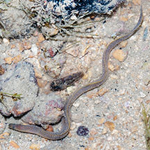
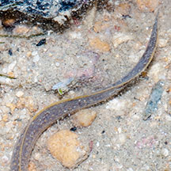
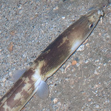
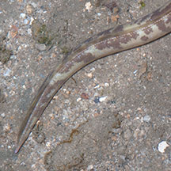
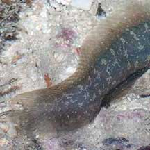
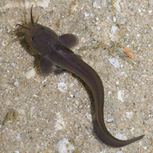
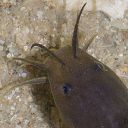
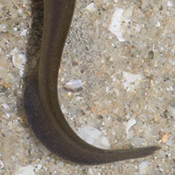
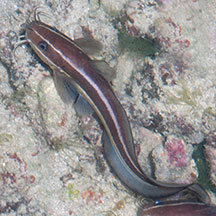

|
|
| Phylum Chordata > Subphylum Vertebrata > fishes | snakes |
| Snake,
eel or eel-like fish? How to tell them apart? updated Sep 2020 Long and squirmy These kinds of animals are often mistaken for one another. |
 |
 |
 |
| Yellow-lipped
sea snake Laticauda colubrina The sea snake is a reptile. |
No
gills or gill openings. No tube on the nostrils. No fins. Has large scales. |
The tail is flattened and paddle-like. |
 |
 |
 |
| Moray
eel Family Muraenidae The moray eel is a fish and a true eel. |
Gill
openings reduced to pores. Pair of tubular nostrils at the snout. No pectoral fins. No scales. |
Dorsal and anal fins are continuous with the tail fin. |
 |
 |
 |
| Snake-eel Family Ophichthidae The snake-eel is a fish, but a true eel. |
Gill
openings reduced to slits. Pair of tubular nostrils at the snout. Has pectoral fins. No scales. |
Tail tip bony and stiff, sharply pointed. |
 |
 |
 |
| Carpet
eel-blenny Congrogadus subducens Family Pseudochromidae The carpet eel-blenny is a fish, but NOT a true eel. |
Has
large gill covers. Has large eyes. No tube on the nostrils. Has pectoral fins. Has small scales. |
Dorsal and anal fins are continuous with the tail fin. |
 |
 |
 |
| Eeltail catfish Family Plotosidae The eeltail catfish is a fish but NOT a true eel. |
Has 'whiskers' (barbels). Gill openings reduced. No tube on the nostrils. Has pectoral fins. No scales. |
Dorsal and anal fins are continuous with the tail fin. |
| More comparisons |
 Striped eeltail catfishes also have eel-like tails. |


 The pipefish is a fish. More on stick-like fishes. |


 A sea whip is a colony of tiny animals that are usually anchored to the bottom, although the entire whip-like colony may sway in the currents. |

| how to tell apart |